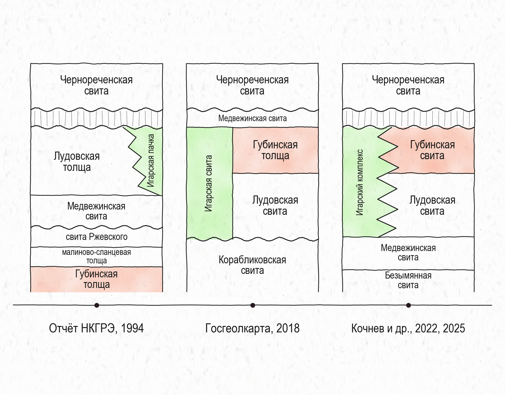

Полевой и научный путеводитель
Лудовские осадочные породы, красноцветы губинской свиты и вулканокластический разрез мыса Кармакулы: обнажения, образцы и история их интерпретации.
Материалы объединяют полевые наблюдения Малышева и Пасенко, аналитические результаты проекта и сведения из геологических работ разных лет. Начните с интересующего подразделения или сравните стратиграфические схемы: одинаковое название в разных источниках может обозначать различный объём пород.
В каждом разделе отдельно приведены наблюдения, трактовки источников и открытые вопросы. Литературные возрастные модели и гипотезы о происхождении цирконов сопровождаются атрибуцией. Статистику наших анализов следует смотреть вместе с настройками фильтра в интерактивных диаграммах.
История представлений
Главное расхождение — положение губинской толщи и ранг игарских вулканитов. Схемы следует сопоставлять по объектам, контактам и аргументам авторов.
| Источник | Губинская | Игарские вулканиты | Основание сопоставления |
|---|---|---|---|
| Гёлецян, 1974 | Выше лудовской, ниже чернореченской | Самостоятельная толща; староигарская выделена отдельно | Состав, метаморфизм, обломки более древних пород |
| Отчёт НКГРЭ, 1994 | Помещена в основание изученного разреза | Игарская и староигарская пачки в лудовской толще | Картирование, скважины, фациальные переходы и корреляция |
| Миллионка Q-45, третье издание | Выше лудовской, ниже медвежинской | Игарская свита сопоставляется с лудовской и губинской частью разреза | Региональная картографическая схема; названия и контакты сверять с легендой |
| Кочнев и др., 2022, 2025 | Вулканогенно-осадочный ярус; опубликованный MDA около 716 млн лет | Латеральный аналог лудовской и губинской свит | Схема госкарт, геохимия, изотопные данные и обломочные цирконы |

Основа: сводка по Гёлецяну (1974), отчёту НКГРЭ (1994), миллионке Q-45 и статьям Кочнева. Детальные ссылки — в разделе «Источники».
Терригенные и вулканогенно-осадочные разрезы
Опорная территория — остров Плахинский, мысы Большие и Малые Луды. Объём подразделения существенно менялся между работами.
По Гёлецяну это филлитизированные тонкозернистые породы вулканогенно-осадочного происхождения с карбонатными породами. В отчёте 1994 года лудовская толща объединяет более широкий разрез: карбонатно-песчано-глинистые ритмиты и вулканические пачки. В западной Плахинско-Игарской зоне выделены восточноплахинская, игарская и староигарская пачки.
Гёлецян оценивал обнажённую мощность более чем в 320–550 м; отчёт НКГРЭ — общую мощность более 1500 м. Эти оценки относятся к различному объёму подразделения. По отчёту, вулканиты игарской пачки к северу замещаются песчано-глинистыми ритмитами.
В проекте доступны наши SM25-01 и SM25-02 и опубликованная проба Кочнева 2007-15 из нижней части лудовского разреза. Для 2007-15 в приложении приведено 121 определение; в опубликованном описании самое молодое — 1551 ± 27 млн лет, остальные преимущественно палеопротерозойские и архейские.
Гёлецян, 1974; НКГРЭ, 1994, п. 3.1.1.4; Кочнев и др., 2025.
Красноцветные терригенные породы
Красноцветные кварцитовидные песчаники, алевролиты и гравелиты. Стратотип связывается с южной оконечностью острова Большой Медвежий.
В полевых описаниях и литературе отмечаются косая слоистость, изменение зернистости и степени кварцевого обогащения. Проба SM26-07 из района отбора SM25-05 представлена кварцитопесчаником: кварцевая мозаика с сутурированными границами, малое количество матрикса и железистые плёнки.
Для обсуждения возраста доступны наши данные SM25-05 и опубликованные данные Кочнева 1812-2 (аналитический набор 41812). Сравнение в портале позволяет переключать линии и ширину KDE-ядра; отдельное окно показывает молодой диапазон 700–900 млн лет.
Для пробы Кочнева опубликован максимальный возраст осадконакопления 716 ± 10 млн лет по трём молодым зёрнам. Максимум KDE, взвешенное среднее выбранной группы и максимальный возраст осадконакопления — разные величины; для сопоставления нужны одинаковые фильтры и явно выбранный кластер.
SM25-07 на ручье Спилитовом и силл 1812-1 на Малом Медвежьем — отдельные объекты. Сопоставление их возрастов с терригенными спектрами — одна из ключевых задач проекта.
Перейти к дайкам и силлам →Гёлецян, 1974; НКГРЭ, 1994, п. 3.1.1.1; Кочнев и др., 2022, 2025; наши полевые и аналитические материалы.
Мыс Кармакулы и окрестности Игарки
Вулканокластический разрез с туфобрекчиями, гиалокластитами, подушечными лавами и редкими осадочными прослоями.
У Гёлецяна игарская — самостоятельная толща с преобладанием вулканокластики. В отчёте 1994 года это пачка внутри лудовской толщи, в районе Игарки занимающая значительный объём разреза. Кочнев рассматривает игарский комплекс как латеральный аналог лудовской и губинской свит.
По реестру SM26-03 отобрана из той же линзы, что SM25-16; SM26-04 — её продолжение к западу, где линза выклинивается и появляются базальтовые валуны. Шлифы SM26-03/04 описаны как вулканотерригенные песчаники с хлоритизированным матриксом и кальцитовым цементом. Полевая слоистость поддерживает осадочное переотложение материала.
Отчёт НКГРЭ описывает на мысе Кармакулы гиалокластиты разных размерностей, туффиты и гематизированные яшмоиды. Часть последовательности восстановлена по скважинам. Привязка наших точек к конкретной пачке требует совмещения карты и линии разреза: близость координат к опорному участку ещё не задаёт стратиграфический уровень.
Гёлецян, 1974, с. 37–51; НКГРЭ, 1994, с. 240–243, рис. 3.16; полевой реестр и описания шлифов.
Самостоятельные объекты
Тело описывалось как кварцевый диорит-порфирит; его состав и положение обсуждаются по петрографии, геохимии и полевым взаимоотношениям. В цирконе выделяется компактная популяция. Расчёт зависит от метода дискордантности, порога и контекстных исключений.
Кочнев и др. (2025) приводят возраст цирконового кластера 834,5 ± 4,2 млн лет (n = 13) и трактуют цирконы как ксеногенные, исходя из принятого возраста вмещающей губинской свиты. Эта трактовка зависит от возрастной модели вмещающих пород; возраст кластера и возраст внедрения силла следует различать.
Возрастной спектр смешанный. Единая магматическая популяция пока не обоснована; WM всей выборки не используется как возраст тела. Для дальнейшей интерпретации важны CL/BSE-контекст спотов и проверка общего свинца.
Наши U–Pb результаты; Кочнев и др., 2025. Разные тела не объединяются в одно событие только на основании близкого географического положения.
Происхождение сведений
Путеводитель подготовлен по рабочей сводке «Лудовская, Губинская толщи и “Игарская толща”». Сведения из этой сводки не являются новой независимой проверкой первоисточников. Спорные положения сохранены как интерпретации соответствующих авторов.
Численные сводки наших U–Pb результатов подставляются из текущего расчёта портала. В интерактивном окне изменение фильтра может давать другое число принятых анализов и другое среднее. Ранее полученные значения из черновиков не подменяют текущий расчёт.